For Kubernetes, the Metrics API offers a basic set of metrics to support automatic scaling and similar use cases. This API makes information available about resource usage for node and pod, including metrics for CPU and memory. If you deploy the Metrics API into your cluster, clients of the Kubernetes API can then query for this information, and you can use Kubernetes' access control mechanisms to manage permissions to do so.
The HorizontalPodAutoscaler (HPA) and VerticalPodAutoscaler (VPA) use data from the metrics API to adjust workload replicas and resources to meet customer demand.
You can also view the resource metrics using the kubectl top
command.
Note:
The Metrics API, and the metrics pipeline that it enables, only offers the minimum CPU and memory metrics to enable automatic scaling using HPA and / or VPA. If you would like to provide a more complete set of metrics, you can complement the simpler Metrics API by deploying a second metrics pipeline that uses the Custom Metrics API.
Figure 1 illustrates the architecture of the resource metrics pipeline.

Figure 1. Resource Metrics Pipeline
The architecture components, from right to left in the figure, consist of the following:
cAdvisor: Daemon for collecting, aggregating and exposing container metrics included in Kubelet.
kubelet: Node agent for managing container resources. Resource metrics are accessible using the
/metrics/resourceand/statskubelet API endpoints.node level resource metrics: API provided by the kubelet for discovering and retrieving per-node summarized stats available through the
/metrics/resourceendpoint.metrics-server: Cluster addon component that collects and aggregates resource metrics pulled from each kubelet. The API server serves Metrics API for use by HPA, VPA, and by the
kubectl topcommand. Metrics Server is a reference implementation of the Metrics API.Metrics API: Kubernetes API supporting access to CPU and memory used for workload autoscaling. To make this work in your cluster, you need an API extension server that provides the Metrics API.
Note:
cAdvisor supports reading metrics from cgroups, which works with typical container runtimes on Linux. If you use a container runtime that uses another resource isolation mechanism, for example virtualization, then that container runtime must support CRI Container Metrics in order for metrics to be available to the kubelet.
Metrics API
Feature state:
Stable since Kubernetes v1.37
The metrics-server implements the Metrics API. This API allows you to access CPU and memory usage for the nodes and pods in your cluster. Its primary role is to feed resource usage metrics to K8s autoscaler components.
Here is an example of the Metrics API request for a
minikube node piped through jq for easier
reading:
kubectl get --raw "/apis/metrics.k8s.io/v1/nodes/minikube" | jq '.'Here is the same API call using curl:
curl http://localhost:8080/apis/metrics.k8s.io/v1/nodes/minikubeSample response:
{
"kind": "NodeMetrics",
"apiVersion": "metrics.k8s.io/v1",
"metadata": {
"name": "minikube",
"selfLink": "/apis/metrics.k8s.io/v1/nodes/minikube",
"creationTimestamp": "2022-01-27T18:48:43Z"
},
"timestamp": "2022-01-27T18:48:33Z",
"window": "30s",
"usage": {
"cpu": "487558164n",
"memory": "732212Ki"
}
}Here is an example of the Metrics API request for a
kube-scheduler-minikube pod contained in the
kube-system namespace and piped through jq for
easier reading:
kubectl get --raw "/apis/metrics.k8s.io/v1/namespaces/kube-system/pods/kube-scheduler-minikube" | jq '.'Here is the same API call using curl:
curl http://localhost:8080/apis/metrics.k8s.io/v1/namespaces/kube-system/pods/kube-scheduler-minikubeSample response:
{
"kind": "PodMetrics",
"apiVersion": "metrics.k8s.io/v1",
"metadata": {
"name": "kube-scheduler-minikube",
"namespace": "kube-system",
"selfLink": "/apis/metrics.k8s.io/v1/namespaces/kube-system/pods/kube-scheduler-minikube",
"creationTimestamp": "2022-01-27T19:25:00Z"
},
"timestamp": "2022-01-27T19:24:31Z",
"window": "30s",
"containers": [
{
"name": "kube-scheduler",
"usage": {
"cpu": "9559630n",
"memory": "22244Ki"
}
}
]
}The Metrics API is defined in the k8s.io/metrics
repository. You must enable the API
aggregation layer and register an APIService
for the metrics.k8s.io API.
To learn more about the Metrics API, see resource metrics API design, the metrics-server repository and the resource metrics API.
Note:
You must deploy the metrics-server or alternative adapter that serves the Metrics API to be able to access it.
Measuring resource usage
CPU
CPU is reported as the average core usage measured in cpu units. One cpu, in Kubernetes, is equivalent to 1 vCPU/Core for cloud providers, and 1 hyper-thread on bare-metal Intel processors.
This value is derived by taking a rate over a cumulative CPU counter provided by the kernel (in both Linux and Windows kernels). The time window used to calculate CPU is shown under window field in Metrics API.
To learn more about how Kubernetes allocates and measures CPU resources, see meaning of CPU.
Memory
Memory is reported as the working set, measured in bytes, at the instant the metric was collected.
In an ideal world, the "working set" is the amount of memory in-use that cannot be freed under memory pressure. However, calculation of the working set varies by host OS, and generally makes heavy use of heuristics to produce an estimate.
The Kubernetes model for a container's working set expects that the container runtime counts anonymous memory associated with the container in question. The working set metric typically also includes some cached (file-backed) memory, because the host OS cannot always reclaim pages.
To learn more about how Kubernetes allocates and measures memory resources, see meaning of memory.
Metrics Server
The metrics-server fetches resource metrics from the kubelets and
exposes them in the Kubernetes API server through the Metrics API for
use by the HPA and VPA. You can also view these metrics using the
kubectl top command.
The metrics-server uses the Kubernetes API to track nodes and pods in your cluster. The metrics-server queries each node over HTTP to fetch metrics. The metrics-server also builds an internal view of pod metadata, and keeps a cache of pod health. That cached pod health information is available via the extension API that the metrics-server makes available.
For example with an HPA query, the metrics-server needs to identify which pods fulfill the label selectors in the deployment.
The metrics-server calls the kubelet API to collect metrics from each node. Depending on the metrics-server version it uses:
- Metrics resource endpoint
/metrics/resourcein version v0.6.0+ or - Summary API endpoint
/stats/summaryin older versions
What's next
To learn more about the metrics-server, see the metrics-server repository.
You can also check out the following:
- metrics-server design
- metrics-server FAQ
- metrics-server known issues
- metrics-server releases
- Horizontal Pod Autoscaling
To learn about how the kubelet serves node metrics, and how you can access those via the Kubernetes API, read Node Metrics Data.